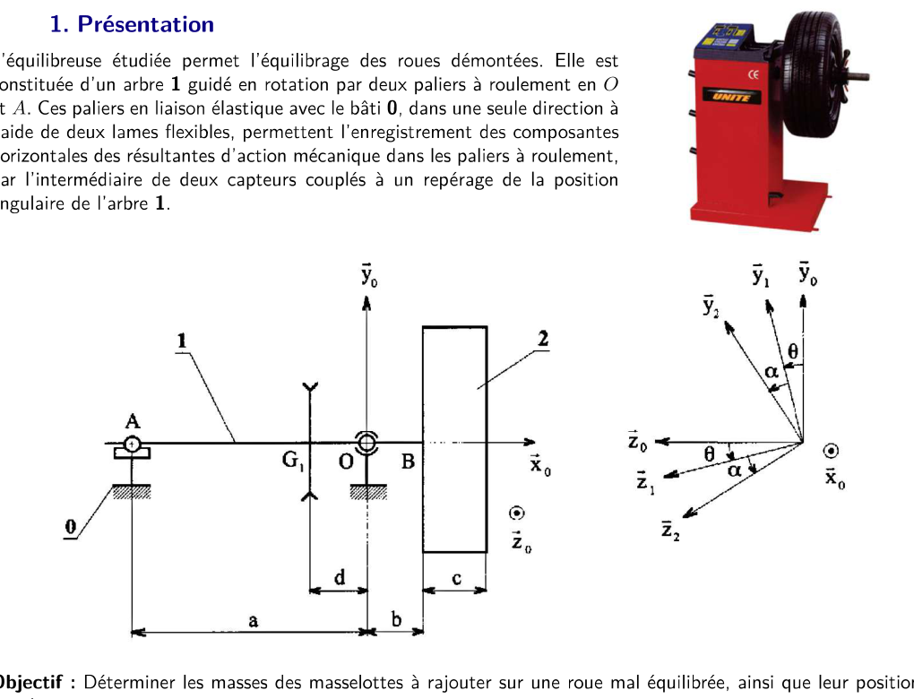
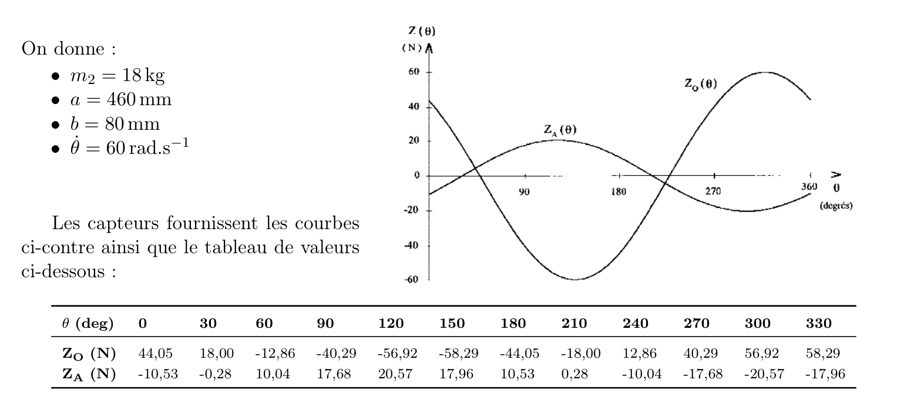

Un exercice du TD « Principe fondamental de la dynamique » (CPGE PT, S2I). L'arbre 1 porte une roue 2 mal équilibrée. On mesure les efforts dans les paliers, puis on en déduit la position du défaut de la roue, puis on place deux masselottes pour l'annuler. Pour chaque question : ce qu'elle demande, la démarche, le calcul complet, et les encadrés de méthode.
Pour un ensemble \(\Sigma\), la somme des torseurs des actions extérieures est égale au torseur dynamique : \(\{\mathcal T_{\text{ext}\to\Sigma}\}=\{\mathcal D_{\Sigma/0}\}\). Le torseur dynamique a deux parties :
Une roue « mal équilibrée » a son centre d'inertie \(G_2\) décalé de l'axe de rotation (distance \(\rho\)) et des produits d'inertie \(E\) et \(F\) non nuls. En tournant, elle fait naître dans les paliers des efforts sinusoïdes en fonction de l'angle. C'est ce que mesurent les deux capteurs. Le problème inverse est donc : à partir de ces mesures, retrouver \(\rho\), \(\alpha\), \(E\), \(F\), puis placer les masselottes.

| Grandeur | Valeur | Grandeur | Valeur |
|---|---|---|---|
| \(m_2\) | 18 kg | \(\omega=\dot\theta\) | 60 rad·s⁻¹ |
| \(a\) | 460 mm | \(b\) | 80 mm |
Les courbes et le tableau des mesures sont donnés à la question 3 (image juste au-dessus).
Q1Efforts dans les paliers : PFD sur \(\{1+2\}\) en \(O\)
Démarche
Résultante (projection sur \(\vec x_0,\vec y_0,\vec z_0\)) :
\[m_2\vec\Gamma_{G_2}=-m_2\rho\omega^2\vec z_2=-m_2\rho\omega^2\big[-\sin(\alpha{+}\theta)\vec y_0+\cos(\alpha{+}\theta)\vec z_0\big]\] \[X_O=0,\qquad Y_O+Y_A-T-(m_1+m_2)g=m_2\rho\omega^2\sin(\alpha{+}\theta),\qquad Z_O+Z_A=-m_2\rho\omega^2\cos(\alpha{+}\theta)\]Moment dynamique en \(B\) : \(\sigma_B=\bar{\bar I}_{(B,2)}\,\omega\vec x_0=\omega\,(A\vec x_0-F\vec y_2-E\vec z_2)\). Comme \(\vec y_2\) et \(\vec z_2\) tournent à \(\omega\) autour de \(\vec x_0\), leur dérivée donne : \(\vec\delta_B=\omega^2\,(E\,\vec y_2-F\,\vec z_2)\).
Transport en \(O\) : \(\vec\delta_O=\vec\delta_B+\overrightarrow{OB}\wedge m_2\vec\Gamma_{G_2}\), avec \(\overrightarrow{OB}=b\vec x_0\) : \(b\vec x_0\wedge(-m_2\rho\omega^2\vec z_2)=bm_2\rho\omega^2\vec y_2\). Donc :
\[\vec\delta_{O}=\omega^2\big[(E+bm_2\rho)\,\vec y_2-F\,\vec z_2\big]\]On projette sur \(\vec y_0,\vec z_0\) avec \(\vec y_2=\cos(\alpha{+}\theta)\vec y_0+\sin(\alpha{+}\theta)\vec z_0\) et \(\vec z_2=-\sin(\alpha{+}\theta)\vec y_0+\cos(\alpha{+}\theta)\vec z_0\). Les équations de moment sont : \(\vec z_0\) donne \(-aY_A+dT+m_1gd-m_2g(b+h)=\delta_{O}\cdot\vec z_0\), et \(\vec y_0\) donne \(aZ_A=\delta_O\cdot\vec y_0\). Le moment selon \(\vec y_0\) ne contient que \(Z_A\) (bras \(a\)), ce qui isole \(Z_A\) directement.
Q2Position de la roue : \(\rho\), \(\alpha\), \(E\), \(F\) à partir des capteurs
Démarche
Pour \(\theta=0\) : \(Z_A(0)=\dfrac{\omega^2}{a}[(E+m_2\rho b)\cos\alpha+F\sin\alpha]\) (1), \(Z_O(0)=-\dfrac{\omega^2}{a}[(E+m_2\rho(a+b))\cos\alpha+F\sin\alpha]\) (2). Par somme : \(Z_A(0)+Z_O(0)=-m_2\rho\omega^2\cos\alpha\) (3).
Pour \(\theta=\pi/2\) : \(Z_A(\tfrac\pi2)=\dfrac{\omega^2}{a}[-(E+m_2\rho b)\sin\alpha+F\cos\alpha]\) (4), \(Z_O(\tfrac\pi2)=-\dfrac{\omega^2}{a}[-(E+m_2\rho(a+b))\sin\alpha+F\cos\alpha]\) (5). Par somme : \(Z_A(\tfrac\pi2)+Z_O(\tfrac\pi2)=m_2\rho\omega^2\sin\alpha\) (6).
Module : \((3)^2+(6)^2\) donne \(\rho\). Rapport : \((6)/(3)\) donne \(\tan\alpha\). Puis :
\[\rho=\dfrac{1}{m_2\omega^2}\sqrt{\big(Z_A(0)+Z_O(0)\big)^2+\big(Z_A(\tfrac\pi2)+Z_O(\tfrac\pi2)\big)^2}\qquad \tan\alpha=-\dfrac{Z_A(\tfrac\pi2)+Z_O(\tfrac\pi2)}{Z_A(0)+Z_O(0)}\] \[F=\dfrac{a}{\omega^2}\Big(Z_A(0)\sin\alpha+Z_A(\tfrac\pi2)\cos\alpha\Big)\qquad E=\dfrac{a}{\omega^2}\Big(Z_A(0)\cos\alpha-Z_A(\tfrac\pi2)\sin\alpha\Big)-m_2\rho b\]Q3Application numérique : \(\rho\), \(\alpha\), \(E\), \(F\)

Mesures utilisées (tableau) : \(Z_O(0)=44{,}05\) N, \(Z_A(0)=-10{,}53\) N, \(Z_O(90°)=-40{,}29\) N, \(Z_A(90°)=17{,}68\) N.
\[S_0=Z_A(0)+Z_O(0)=33{,}52\ \text N\qquad S_p=Z_A(\tfrac\pi2)+Z_O(\tfrac\pi2)=-22{,}61\ \text N\] \[\rho=\dfrac{\sqrt{33{,}52^2+22{,}61^2}}{18\times 60^2}=\dfrac{40{,}43}{64\,800}\approx 6{,}2\times10^{-4}\ \text m\approx 0{,}62\ \text{mm}\] \[\alpha:\ \tan\alpha=\dfrac{-22{,}61}{-33{,}52}\ \text{avec}\ \cos\alpha<0\ \Rightarrow\ \alpha\approx 214^\circ\]Avec \(K_0=Z_A(0)\,a/\omega^2=-10{,}53\times0{,}46/3600\approx-1{,}35\times10^{-3}\) kg·m² et \(K_p=Z_A(\tfrac\pi2)\,a/\omega^2=17{,}68\times0{,}46/3600\approx2{,}26\times10^{-3}\) kg·m², avec \(\cos\alpha\approx-0{,}829\), \(\sin\alpha\approx-0{,}559\) :
\[E+m_2\rho b=K_0\cos\alpha-K_p\sin\alpha\approx2{,}38\times10^{-3}\ \Rightarrow\ E\approx2{,}38\times10^{-3}-0{,}89\times10^{-3}\approx1{,}5\times10^{-3}\ \text{kg·m}^2\] \[F=K_0\sin\alpha+K_p\cos\alpha\approx-1{,}1\times10^{-3}\ \text{kg·m}^2\]Les courbes mesurées sont bien des sinusoïdes : le graphique ci-dessous compare les mesures à la sinusoïde \(P\cos\theta+Q\sin\theta\).
Q4Conditions d'équilibrage de la roue
Démarche
Statique (\(G\) sur l'axe) :
\[(7):\ -m_3r\sin\beta_3-m_4r\sin\beta_4=0\qquad (8):\ m_2\rho+m_3r\cos\beta_3+m_4r\cos\beta_4=0\]Dynamique : la masselotte 3 est dans le plan \(B\) (bras axial nul), elle ne crée aucun produit d'inertie. Seule la masselotte 4, déportée de \(c\), en crée. On annule donc les produits d'inertie totaux :
\[(9):\ E+m_4cr\cos\beta_4=0\qquad (10):\ F-m_4cr\sin\beta_4=0\]Q5Valeurs numériques : \(m_3\), \(m_4\), \(\beta_3\), \(\beta_4\)
Démarche
Masselotte 4 : \(m_4cr=\sqrt{E^2+F^2}=\sqrt{(1{,}5\times10^{-3})^2+(1{,}1\times10^{-3})^2}\approx1{,}86\times10^{-3}\) kg·m², \(cr=0{,}18\times0{,}19=0{,}0342\) m², donc :
\[m_4=\dfrac{1}{cr}\sqrt{E^2+F^2}\approx 54\ \text g\] \[\cos\beta_4=-\dfrac{E}{m_4cr}\approx-0{,}80,\qquad \sin\beta_4=\dfrac{F}{m_4cr}\approx-0{,}60\ \Rightarrow\ \beta_4\approx216^\circ\]Masselotte 3 (déduite de (7) et (8)) : \(m_3\cos\beta_3\,cr=E-m_2\rho c\) et \(m_3\sin\beta_3\,cr=-F\), soit :
\[m_3=\dfrac{1}{cr}\sqrt{F^2+(E-m_2\rho c)^2}\approx36\ \text g\qquad \tan\beta_3=\dfrac{F}{m_2\rho c-E}\ \Rightarrow\ \beta_3\approx115^\circ\]Avec \(m_2\rho c=18\times0{,}62\times10^{-3}\times0{,}18\approx2{,}0\times10^{-3}\) kg·m², \(E-m_2\rho c\approx-0{,}5\times10^{-3}\) : \(\cos\beta_3<0\) et \(\sin\beta_3>0\), donc \(\beta_3\) est dans le 2ᵉ quadrant.